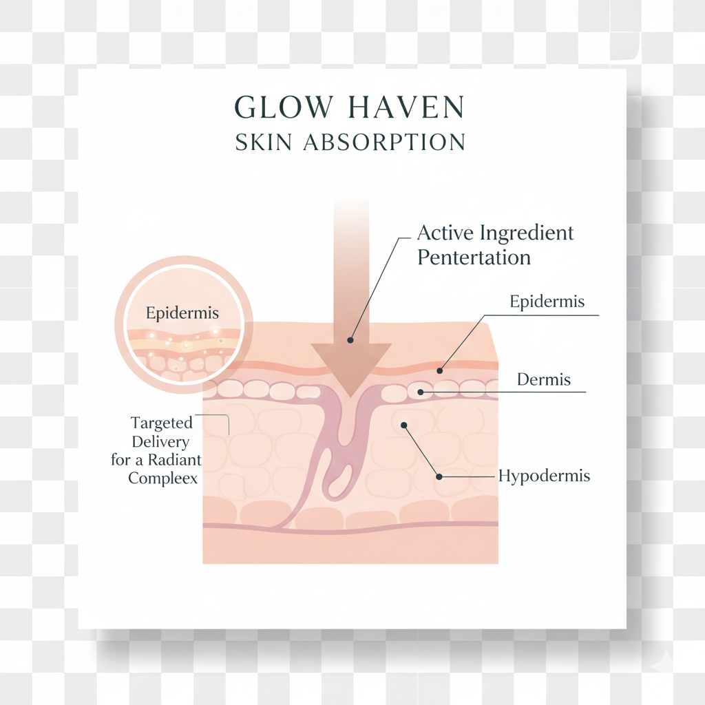

Ingredient Spotlight: Ethically Sourced Shea Butter
Our Shea Butter is known for its intense moisturizing properties and rich vitamin content.
How Shea Butter Works on Skin
Shea butter creates a protective barrier on the skin, preventing moisture loss while delivering essential fats and vitamins (A and E).
Our Responsible Sourcing Process (Ordered List)
- Identify sustainable farming cooperatives with fair-trade certification.
- Verify ingredient purity and ethical handling practices.
- Trace the ingredient journey from harvest to our lab.
- Ensure fair wages and local community benefits.